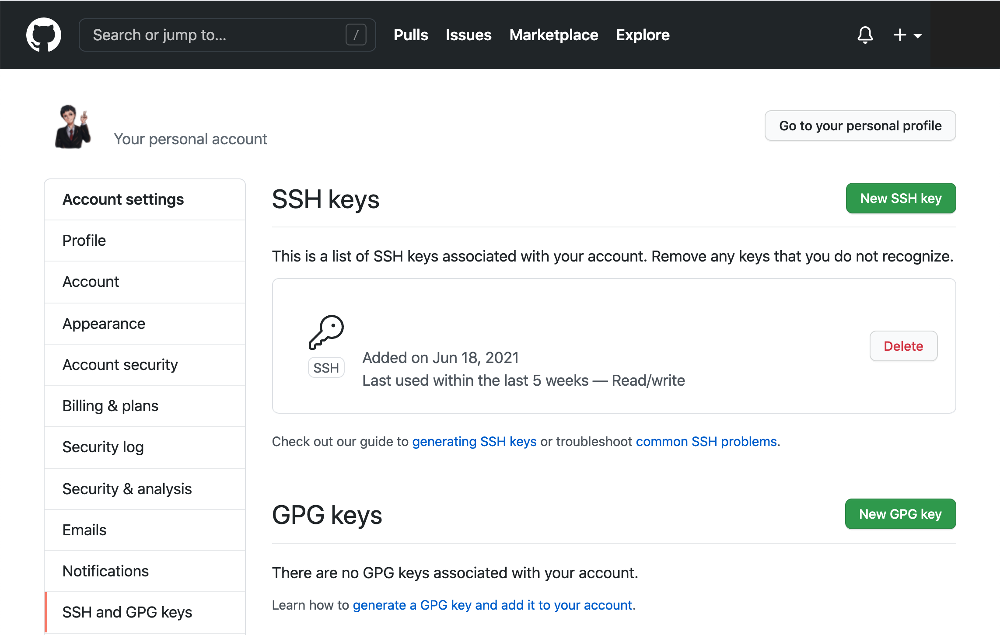

CLI Selected#
Git SSH Setup Guide#
SSH Key Generation#
First check for existing keys:
$ lc -al ~/.ssh
Use ssh-keygen to generate new the SSH key with the email registering GitHub:
$ ssh-keygen -t ed25519 -C "<xxx>@email.com"
Generating public/private ed25519 key pair.
Enter file in which to save the key:
...
Enter passphrase (empty for no passphrase):
...
Important
Your passphrase should be complicated, and you must store it safely.
Note
A passphrase is a memorized secret consisting of a sequence of words or other text that a claimant uses to authenticate their identity. Here, it refers to a secret used to protect an encryption key. Commonly, an actual encryption key is derived from the passphrase and used to encrypt the protected resource.
Fire up the SSH agent and add the SSH key to ~/.ssh on your local machine:
$ eval `ssh-agent -s`
$ ssh-add ~/.ssh/id_ed25519
Enter passphrase for /Users/<user>/.ssh/id_ed25519:
...
Identity added: /Users/<user>/.ssh/id_ed25519
SSH Key Link#
Pull up the key:
$ cat ~/.ssh/id_ed25519.pub
now copy the output, navigate to Github settings, and add the SSH key

Login Escape#
If it is asking you for a username and password when manipulating with GitHub, your origin remote is pointing at the HTTPS url rather than the SSH url. You need to change it to SSH url:
$ git remote set-url origin git@github.com:<username>/<repo>.git
Configure Git Identity#
Set global identity
$ git config --global user.name "Yiming Dai"
$ git config --global user.email "yiming.dai@example.com"
Ensure the email matches your GitHub account for commit attribution.
Set main as default
$ git config --global init.defaultBranch main
Enable colors
$ git config --global color.ui auto
Git Branch Recovery#
Remote branch recovery#
If we have pushed the branch to a remote server, we could use git reflog to recover easily and reliably. Suppose we have following commit history to the branch named main with corresponding activity id:
$ git reflog
1ed7510 HEAD@{1}: commit: message 1
70b3696 HEAD@{2}: commit: message 2
98f2fc2 HEAD@{3}: commit: message 3
we could find the target commit and push back to origin to recover:
$ checkout -b main 1ed7510
$ add -A
$ push origin main
Local branch recovery#
If we have not pushed the branch, we could create a list of all dangling or unreachable commits, where the commits are copied into .git/lost-found/commit/, and non-commit objects are copied into .git/lost-found/other/,
$ git fsck --full --no-reflogs --unreachable --lost-found
unreachable tree 4a407b1b09e0d8a16be70aa1547332432a698e18
unreachable tree 5040d8cf08c78119e66b9a3f8c4b61a240229259
unreachable tree 60c0ce61b040f5e604850f747f525e88043dae12
print a list of commit messages for all commits in the lost and found,
$ ls -1 .git/lost-found/commit/ | xargs -n 1 git log -n 1 --pretty=oneline
9ae38fc6b0548cab08ccee1178db0ba0edeafdb2 foo # target commit
6ed99e63db69ca04f0cc78081a1fd471289551b2 On master: search and reset
973d9be3e2cefcd0c5801ad9cd1b2e18774b4bee Rename decorator proxy
9efa6b28b3b0a89c312484f28cf589385d613dfd On master: mysql db config
and create a new branch with the missing commit as the branch head:
$ git checkout -b <branch-name> 9ae38fc
Switched to a new branch <branch-name>
VMware Fusion / Ubuntu SSH Agent Hang#
Problem#
Inside an Ubuntu guest running in VMware Fusion, SSH test may hang after reboot even when the GitHub SSH key is valid and already appears in the SSH public-key identitiy list. This may GitHub has accepted the public key, but the local SSH client cannot complete the signing step through the current SSH agent or desktop keyring. The reliable fix is to avoid the desktop keyring agent and use a dedicated OpenSSH agent socket.
Confirm the Key Works#
Bypass the agent and force SSH to read the private key directly:
$ SSH_AUTH_SOCK= ssh -vvvT git@github.com
If this prompts for the private key passphrase and then prints:
Hi <username>! You've successfully authenticated, but GitHub does not provide shell access.
then the key is correct, the GitHub account has the right public key, and the problem is the local SSH agent/keyring path.
One-Session Fix#
Use a dedicated OpenSSH agent socket instead of the desktop keyring agent:
$ rm -f ~/.ssh/agent.sock
$ eval "$(ssh-agent -a ~/.ssh/agent.sock -s)"
$ export SSH_AUTH_SOCK="$HOME/.ssh/agent.sock"
$ ssh-add ~/.ssh/id_ed25519
$ ssh -T git@github.com
Line-by-line explanation:
rm -f ~/.ssh/agent.sockRemoves any stale SSH agent socket left from a previous login, reboot, or crashed agent. The
-fflag suppresses errors if the file does not exist.eval "$(ssh-agent -a ~/.ssh/agent.sock -s)"Starts a new OpenSSH agent and tells it to listen on a fixed socket path,
~/.ssh/agent.sock. Theevalapplies the environment variables printed byssh-agentto the current shell.export SSH_AUTH_SOCK="$HOME/.ssh/agent.sock"Tells SSH and
ssh-addto use this dedicated OpenSSH agent instead of GNOME Keyring, GCR, or another desktop-provided agent.ssh-add ~/.ssh/id_ed25519Loads the private key into the dedicated agent. If the key has a passphrase, this is where the passphrase should be entered.
ssh -T git@github.comTests SSH authentication against GitHub. The
-Tflag disables pseudo-terminal allocation, which is appropriate because GitHub does not provide shell access.
Persistent Shell Fix#
Add this to ~/.zshrc:
# Use a dedicated OpenSSH agent for this shell.
export SSH_AUTH_SOCK="$HOME/.ssh/agent.sock"
if ! ssh-add -l >/dev/null 2>&1; then
rm -f "$SSH_AUTH_SOCK"
eval "$(ssh-agent -a "$SSH_AUTH_SOCK" -s)" >/dev/null
ssh-add ~/.ssh/id_ed25519
fi
This ensures that new shell sessions use the fixed OpenSSH agent socket. The ssh-add -l check asks whether the current agent already has identities. If it fails, the script removes the old socket, starts a new agent, and loads the private key.
GitHub SSH Config#
Use this ~/.ssh/config block:
Host github.com
HostName ssh.github.com
User git
IdentityFile ~/.ssh/id_ed25519
Port 443
IdentitiesOnly yes
AddressFamily inet
AddKeysToAgent no
IdentityAgent ~/.ssh/agent.sock
Line-by-line explanation:
Host github.comDefines rules used when the command targets
github.com, for examplessh -T git@github.comorgit clone git@github.com:<user>/<repo>.git.HostName ssh.github.comConnects to GitHub’s SSH-over-HTTPS endpoint. This is useful on networks where the default SSH port
22is blocked.User gitUses the required GitHub SSH username. GitHub SSH authentication always uses
gitas the SSH user, not the GitHub account name.IdentityFile ~/.ssh/id_ed25519Selects the private key to use for GitHub authentication.
Port 443Uses port
443instead of the default SSH port22. This pairs withHostName ssh.github.com.IdentitiesOnly yesForces SSH to use only the explicitly configured identity file instead of trying every key available in the agent.
AddressFamily inetForces IPv4. This can avoid IPv6-related connection issues in virtual machines or constrained networks.
AddKeysToAgent noPrevents SSH from automatically adding the key to an arbitrary default agent. This avoids accidentally reusing the problematic desktop/keyring agent.
IdentityAgent ~/.ssh/agent.sockForces SSH to use the dedicated OpenSSH agent socket created above.
Verification#
After restarting the terminal, check the active agent and test GitHub:
$ echo "$SSH_AUTH_SOCK"
/home/<user>/.ssh/agent.sock
$ ssh-add -l -E sha256
256 SHA256:<fingerprint> <email> (ED25519)
$ ssh -T git@github.com
Hi <username>! You've successfully authenticated, but GitHub does not provide shell access.
Tiling Assistant#
Overview#
Tiling Assistant enhances GNOME’s native window management with quarter tiling, window groups, advanced snap layouts, and configurable keyboard shortcuts.
The extension can be installed either from Ubuntu packages or manually from the upstream release archive.
Prerequisites#
Install GNOME extension support tools:
$ sudo apt update
$ sudo apt install \
gnome-shell-extensions \
gnome-shell-extension-manager
Verify GNOME Shell version:
$ gnome-shell --version
Example:
GNOME Shell 50.1
Manual Installation (Upstream Release)#
Download the latest Tiling Assistant ZIP release and place it in
~/Downloads.
Inspect the extension metadata to determine the extension UUID:
$ unzip -p tiling-assistant*.zip metadata.json
Create the local extension directory using the UUID from
metadata.json:
$ mkdir -p \
~/.local/share/gnome-shell/extensions/tiling-assistant@leleat-on-github
Extract the extension:
$ unzip tiling-assistant*.zip \
-d ~/.local/share/gnome-shell/extensions/tiling-assistant@leleat-on-github
Log out and log back in to reload GNOME Shell.
Ubuntu Package Variant#
Ubuntu may already provide a packaged version of Tiling Assistant.
List installed tiling extensions:
$ gnome-extensions list | grep tiling
Example:
tiling-assistant@ubuntu.com
The Ubuntu package uses a different UUID than the upstream project:
Variant |
UUID |
|---|---|
Ubuntu package |
|
Upstream release |
|
Only one variant should normally be enabled.
Enable Extension#
Upstream installation:
$ gnome-extensions enable tiling-assistant@leleat-on-github
Ubuntu package:
$ gnome-extensions enable tiling-assistant@ubuntu.com
Verification#
Confirm that the extension is installed:
$ gnome-extensions list | grep tiling
Display extension information:
$ gnome-extensions info tiling-assistant@ubuntu.com
or
$ gnome-extensions info tiling-assistant@leleat-on-github
Expected state:
State: ENABLED
Configuration#
Open the extension preferences dialog:
$ gnome-extensions prefs tiling-assistant@ubuntu.com
or
$ gnome-extensions prefs \
tiling-assistant@leleat-on-github
Git Storage Cleanup#
du command#
du estimates disk usage. It is useful for finding which directories make a repository large.
Correct usage on Ubuntu:
$ du -hs .git source archive yimingdx.github.io 2>/dev/null | sort -h
$ du -hs --max-depth=2 . | sort -h
In zsh, this command is wrong:
$ du -sh .[!.]* * | sort -h
zsh: event not found: .]
because ! is treated as history expansion. We could quote the pattern:
$ du -sh '.[!.]*' * 2>/dev/null | sort -h
Check Git Object Storage#
Check the total size of .git:
$ du -sh .git
Inspect Git object storage:
$ git count-objects -vH
Important fields:
size-packSize of packed reachable Git objects.
size-garbageSize of garbage objects, if any.
in-packNumber of objects stored in packfiles.
Find the largest files stored anywhere in Git history:
$ git rev-list --objects --all |
git cat-file --batch-check='%(objecttype) %(objectname) %(objectsize) %(rest)' |
awk '$1=="blob" {printf "%.1f MiB\t%s\t%s\n", $3/1024/1024, $2, $4}' |
sort -nr |
head -30
This lists large Git blobs, not only files currently present in the working tree. A deleted image can still appear here if it exists in commit history.
Safe Prune Without Rewriting History#
Do not manually delete files inside .git/objects. That can corrupt the repository.
First make sure the working tree is clean:
$ git status --short
Then run aggressive local cleanup:
$ git reflog expire --expire=now --expire-unreachable=now --all
$ git gc --prune=now --aggressive
$ git count-objects -vH
$ du -sh .git
This removes unreachable objects and expired reflog references. It does not remove large files that are still reachable from existing commits.
Remove Large Files From Git History#
If a large image was committed and later deleted, normal git gc is not enough. The blob is still reachable from old commits, so Git must keep it.
To remove large files from history, use git-filter-repo:
$ sudo apt update
$ sudo apt install git-filter-repo
Make a backup clone before rewriting history:
$ cd ..
$ git clone --mirror <repo> <repo>.backup.git
$ cd <repo>
Remove specific large files from all history:
$ git filter-repo \
--path path/to/large-image.png \
--path path/to/old-large-directory/ \
--invert-paths
Or remove every blob larger than a threshold, for example 10M:
$ git filter-repo --strip-blobs-bigger-than 10M
Then aggressively repack:
$ git reflog expire --expire=now --expire-unreachable=now --all
$ git gc --prune=now --aggressive
$ git count-objects -vH
$ du -sh .git
Finally force-push rewritten branches:
$ git push --force-with-lease origin main
$ git push --force-with-lease origin dev
History Rewrite Warning#
Removing large files from Git history keeps the logical project history, but rewrites commit hashes. Other clones should reclone or carefully reset to the rewritten remote.
After force-pushing, collaborators should usually run:
$ git fetch origin
$ git switch main
$ git reset --hard origin/main
For a personal repository, recloning is often simpler and safer:
$ cd ..
$ rm -rf <repo>
$ git clone git@github.com:<user>/<repo>.git
Best Practice for Large Images#
Do not commit build outputs, generated images, or large binary assets unless they are required source files.
Add ignored paths to .gitignore:
_build/
.doctrees/
*.tmp
*.log
For large files that must stay in the project, use Git LFS:
$ sudo apt install git-lfs
$ git lfs install
$ git lfs track "*.png"
$ git lfs track "*.jpg"
$ git add .gitattributes
$ git commit -m "Track large images with Git LFS"
Git LFS prevents future large image blobs from being stored directly in normal Git history.
Switch - Merge - Push - Delete Branch#
Git command to switch to main branch, merge dev branch, push origin, and delete dev branch both locally and remotely:
git switch main &&
git merge vector_2d &&
git push origin main &&
git branch -d vector_2d &&
git push origin --delete vector_2d